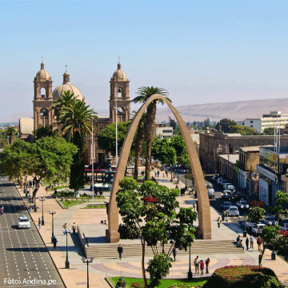

Mi Encabezado 1
Mi Encabezado 2
Mi Encabezado 3
Mi Encabezado 4
Tacna es una ciudad del sur de Perú, cerca de la frontera con Chile. El Paseo Cívico de Tacna se encuentra en su centro y alberga la Catedral de Tacna, de estilo neorrenacentista. Cerca, está el monumento Arco Parabólico, dedicado a los soldados de la Guerra del Pacífico, y el Museo Histórico Regional, con documentos de esa guerra. Justo afuera de la ciudad está el complejo Campo de la Alianza, con un monumento de guerra, un museo y un cementerio.